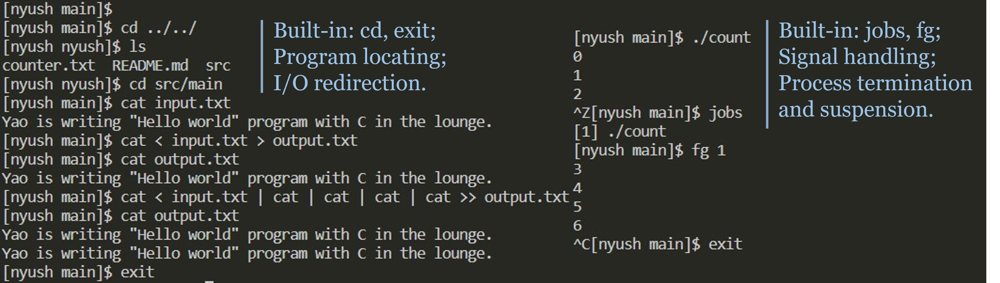

Home / Education / CSCI-UA.0202
CSCI-UA.0202 Operating Systems
Table of Contents
Course information
- Instructor: Yang Tang.
- Semester: Fall 2022.
- Outline: High-level design of key operating system concepts using Linux as an example. Process scheduling, process synchronization; Deadlocks and their prevention; I/O, file systems; Memory management, paging, segmentation; Security and protection.
- Programming language: C.
Gradebook
Overall grade: A (4.00/4.00).
| Item | Grade | Letter |
|---|---|---|
| Homework | 10/10 | A |
| Labs | 48.5/50 | A |
| Midterm | 89.5/101 | A |
| Final | 82/100 | A |
Labs
Lab 2: nyush
Shell-nyush, a.k.a. New Yet Usable Shell, is an implementation of a simple version of the Linux shell. It is an interactive command-line program, involving process creation, destruction, and management, signal handling, and I/O redirection. Basic functionality include:
- Program locating and execution.
- Process termination and suspension.
- Signal handling.
- I/O redirection (including piping).
- Built-in commands (including
cd,exit,jobs, andfg).

You may access the source code here, and note that it should run on a Linux server.
Lab 3: nyuenc
Encoder-nyuenc, a.k.a. Not Your Usual Encoder, is an implementation of a parallelized run-length encoding (RLE). Multiple threads are created to encode in parallel, leading to better performance. In order to avoid frequent creation and destruction of threads, a thread pool is implemented to maintain a certain number of threads, specified by a flag. POSIX threads is used in this lab, and mutual exclusions and conditional variables are used for elimination of race conditions. Basic functionality include:
- Supports a
-jflag. If specified, the corresponding number of threads will be initialized in a thread pool. Otherwise, the encoding will be done sequentially. - Supports run-length encoding (RLE).
- Free of race conditions or busy waiting among threads to achieve high and stable parallelization.
| Size | Threads | Time |
|---|---|---|
| 100MB | 1 | 2.982s |
| 100MB | 3 | 1.026s |
| 1000MB | 3 | 5.206s |
You may access the source code here, and note that it should run on a Linux server.
Lab 4: nyufile
FileRecovery-nyufile, a.k.a, Need You to Undelete My File, is a program for recovering deleted files in a FAT32 file system. Its usage is as follows:
Usage: ./nyufile disk <options>
-i Print the file system information.
-l List the root directory.
-r filename [-s sha1] Recover a contiguous file.
-R filename -s sha1 Recover a possibly non-contiguous file.
Basic functionality include:
- Adapts to different configurations of FAT32 disks.
- Provides reliable file recovery as long as the file contents are not rewritten.
- Searches by file size for contiguously allocated fata blocks and recovers the file.
- Searches by brute force permutation for non-contiguously allocated data blocks given the SHA1 hash of the file contents and recovers the file.
You may access the source code here, and note that it should run on a Linux server that allows mounting of file systems.